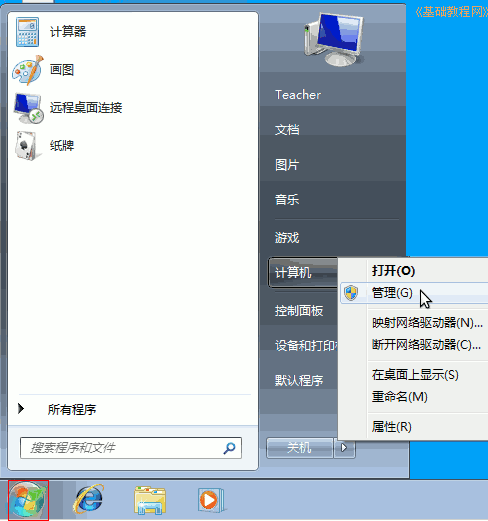
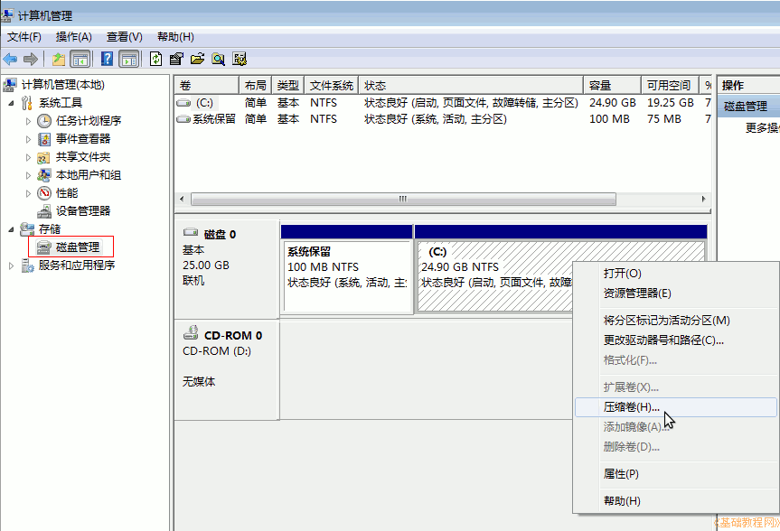
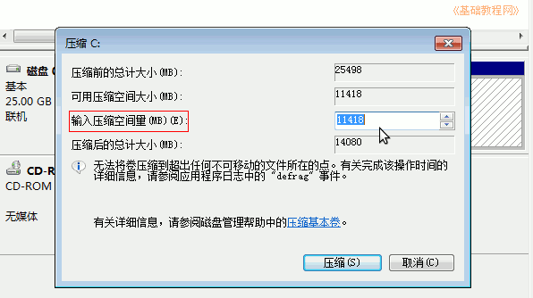
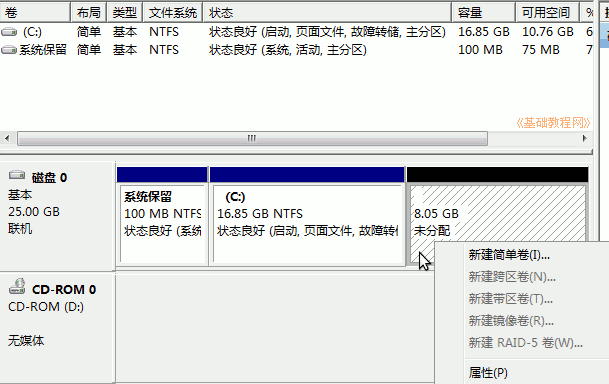

Ubuntu安装基础教程
作者：TeliuTe 来源：基础教程网
磁盘管理压缩卷新分区 返回目录 下一课安装Ubuntu需要准备新分区，Win7/Win8里可以在磁盘管理中完成；
1、创建新分区
1）在桌面的计算机图标上点右键选管理，也可以点左下角“开始－计算机－管理”；

2）在出来的窗口中，左侧栏点“磁盘管理”，右边出来磁盘分区情况，找一个后面的，可用空间多的分区；

3）在选中的磁盘上点右键选“压缩卷”，一般是在最后一个有盘符的分区上点右键，有的机子最后面是系统还原的备份，不要动；
4）出来一个对话框，显示可获得的分区大小，在第三个“输入压缩空间量”文本框里输入新分区大小，单位是MB，1G=1024M；

5）稍等一会，就可以得到一个新的空闲分区，不用动它，留着安装Ubuntu时用；

本节学习了压缩卷得到新分区的基本方法，如果你成功地完成了练习，请继续学习下一课内容；
本教程由86团学校TeliuTe制作|著作权所有
基础教程网：http://teliute.org/
美丽的校园……
转载和引用本站内容，请保留作者和本站链接。